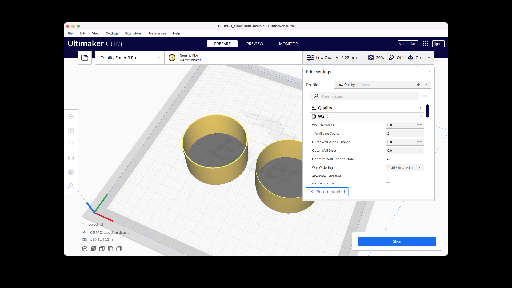

Tools & Software

Before you start, plug in your machine and download all the software.
Assembly steps:
1. I screwed in the vertical channels to the base.
Adjusting the build plate level
This was a nightmarish task that took what felt like an eternity to get right. I conducted the bed leveling protocol from Filament Friday.
*Disclaimer* I made a mistake and set the following prints to 3cm radius instead of 3cm diameter. The tubes and cylinders are about twice as big as they should be.
Test Prints: Tubes

I used the "Tube" command in Rhino to create two tubes that are 3cm in height and diameter (1.5cm radius). To create the tube with the single extrusion wall thickness, I set the thickness to .4mm (since the thickness of a wall line count of 2 in Cura is .8mm). 0.8mm was the thickness of the wall of the second tube.
I opened them in Cura and printed each one at a time since the cylinder with the double wall extrusion had an additional print setting: random z-alignment.

The double wall extrusion print unfortunately wasn't very consistent around its perimeter.
The prints took about 32 min each.
Big thanks to our TA Junchao for his patience and support during Office Hours. Shout out to Akshay, Noelle, Sara, and the peeps on Discord for peer support and guidance.